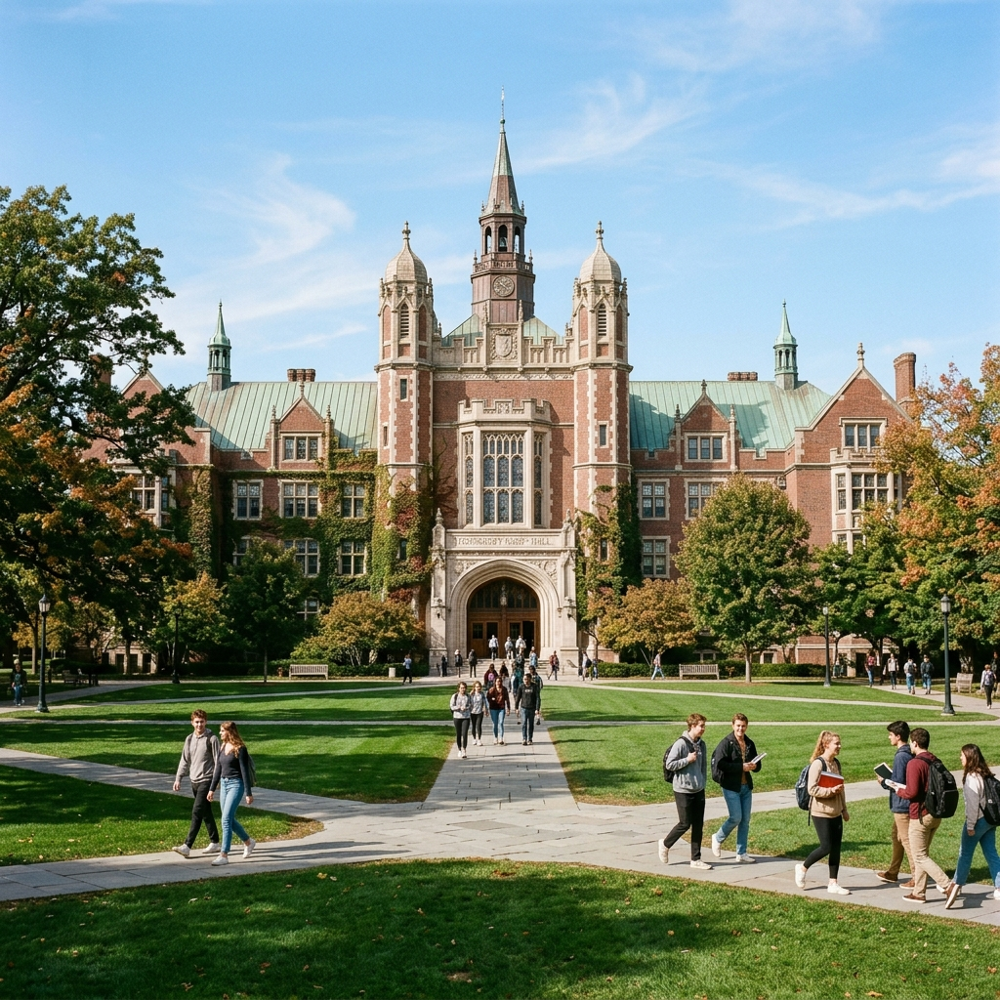

1957'den bu yana Türkiye'nin ve dünyanın geleceğini şekillendiriyoruz.
1957 yılında kurulan Atatürk Üniversitesi, Türkiye'nin ilk ve köklü üniversitelerinden biri olarak 65.000'i aşkın öğrencisi ve 3.200'den fazla akademik personeliyle bilim, kültür ve teknoloji alanında öncü bir kurum olma yolculuğunu sürdürmektedir.
25 fakülte, 4 enstitü, 7 yüksekokul ve 15 meslek yüksekokulu ile 200'ü aşkın lisans ve lisansüstü programı bünyesinde barındıran üniversitemiz; araştırma, eğitim ve topluma hizmet misyonlarını en üst düzeyde yerine getirmeyi hedeflemektedir. Doğu Anadolu'nun kültürel ve bilimsel merkezi olarak bölgeye ve ülkeye katkı sunmaya devam etmektedir.
Bizimle İletişime GeçinEvrensel bilim ve teknoloji üretimine katkıda bulunmak; eleştirel düşünce, etik değerler ve toplumsal sorumluluk anlayışıyla donanmış, çağdaş bireyler yetiştirmek. Araştırma ve uygulamalarıyla bölgenin ve ülkenin kalkınmasına öncülük etmek.
Ulusal ve uluslararası arenada tanınan, tercih edilen, araştırma ve eğitim kalitesiyle öne çıkan; yenilikçi, çevre dostu ve sürdürülebilir bir üniversite olmak. 2030 yılına kadar dünya sıralamalarında ilk 500 üniversite arasına girmek.
Araştırma ve eğitimde bilimsel yöntemi esas alır, kanıta dayalı yaklaşımı benimseriz.
Akademik dürüstlük, şeffaflık ve hesap verebilirlik ilkelerini her koşulda gözetiriz.
Sürekli gelişim ve yeniliği teşvik ederek çağın gereksinimlerine hızlı uyum sağlarız.
Farklı geçmişlerden gelen tüm bireylere eşit fırsat ve saygıyı temel hak olarak kabul ederiz.

Rektör
Üniversitemizin akademik ve idari liderliğini sürdürmekte; ulusal ve uluslararası iş birliklerini geliştirmektedir.
YÖK denetimine tabi, YÖDAK akreditasyonlu üniversitemiz; EUA (Avrupa Üniversiteler Birliği), Coimbra Grubu gözlemcisi ve Türk Üniversiteler Birliği üyesidir.